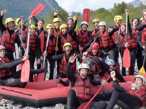

paristechinois
一. 课程
· 课程介绍（目前所上过的课，没有上过的课如果可能的话请学长学姐帮忙写呀……）
课程的话，主要是份三个部分，计算机，力学和数学。计算机的课相对来说比较简单，有一些国内都学过，就是projet比较多。数学的课例如有限元分析，最优化和运筹。力学分为流体和固体两块。
· 如何选专业（如果有专业的话）各专业名称，及各专业人数分布情况
一般来ensta的学生都是从第二年开始读的。第二年主要就分力学，数学和计算机三个部分，第二年选的专业在第三年也是可以换的。但是建议一进来就大致选择好，不然到时缺的课程比较多转专业很会累。
第三年的专业分为三类。1、交通：包括汽车系统，交通系统，未来汽车等专业。2、能源：包括海洋，大气，能源管理等专业。3、工程数学：包括金融数学，最优化，运筹学，数学建模等
各个专业分布比较平均。
· 如何选课（选什么课程对以后的专业发展比较有用……）
哪些课可选哪些课必选？
其实选了专业，选课就基本定了下来，不需要操心了。偶尔会有可选的一两节，是选择另外专业的课程，这个根据自己的兴趣就好。
· 上课形式（比如一节课多久啊，一般几次课后考试啊，考试形式开闭卷啊之类的）
ENSTA的上课形式很有特点。一般是每半天一种课。课程3个小时，前1.5个小时是大课，老师给整个专业的同学讲；后一个半小时是小班，助教上课，直接带领大家做今天的练习题。这种上课方式很有效率，感觉很不错。
· 一些跟学校生活相关的网站？（比如查课表啊，学校给的邮箱啊，下课件啊等等）
http://uma.ensta-paristech.fr/
学校的网站，上面有很详细的课程介绍和发展
· 其他（比如学校的wifi怎么用，如何打印文件，想办什么事要去什么办公室找什么老师之类的）
学校的wifi直接打开网页就会跳到登陆页面，输入自己在学校的用户名密码就行。
每年每个人都会有500页的打印和复印额度，超过了还可以在申请，基本上算是免费打印复印了。
二. 活动
· 宿舍的活动（所住的宿舍楼是否有些活动……）
住在大学城里，各个楼都会有自己的活动。一般来说大学城CIUP协会会定期发送邮件，通知活动。
· 社团介绍（体育的，文艺的，跟企业联系的等等……）
ENSTA的社团很多
Le BDE : une association fédératrice
Elément essentiel et dynamique, le bureau des élèves ou BDE, organise certains des événements incontournables dans la vie de l'étudiant ENSTA comme le week-end d'intégration ainsi que les fameuses soirées, l'accueil des nouveaux élèves, les voyages, les cours particuliers, favoriser les liens entre les étudiants et il représente également les élèves auprès de la direction.
Afin que chacun puisse assouvir sa passion, le BDE encadre différentes activités et associations, en leur apportant structure, matériel et subvention:
· Anim' interne: les soirées internes de l'école
· Boom:soirées étudiantes ouvertes aux autres écoles
· BQSR: le Bureau Qui Sert à Rien, au service de l'inutile
· Club Astro: sortir regarder les étoiles
· Club Info: aide aux élèves pour régler les problèmes informatiques
· ENSTA Night: animation musicale du foyer et des soirées
· Enstantané: le journal de l'école
· Club Poker: tournoi hebdomadaire
· Taboo?: association LGBT de l'ENSTA
· Tapage: association de communication des étudiants de l'école
Association artistique de l'ENSTA ParisTech pour la promotion de la culture.
Le BDA organise des évènements culturels en France ou à l'International et met en vente des places de théâtre, de ballets, d'opéra pour des spectacles parisiens et participe à la subvention d'expositions et de places de cinéma. Le BDA encadre différentes sections pour proposer un éventail le plus large possible des activités au sein de l'école.
· BDthèque: lecture de BD
· Chant: cours de chant
· Ciné club: projection d'un film par semaine
· Club dessin
· Club photo
· Fanfare
· Improvisation
· Kvo: le groupe de musique de l'école
· Octave: le groupe de musiciens classique
· Théâtre: répétition avec représentations
Débutants ou professionnels, l'équipe du BDS vous incitera à aller au bout de vous-même.
· 4L trophy: raid humanitaire en 4L jusqu'au Maroc
· 7 à Paris: tournoi de rugby à 7
· Club montagne: escalade
· Croco's cup: compétition d'aviron
· ENSTAquet: club voile
· ENSTArtiflette: club ski
· Pom Pom: chorégraphie d'animation
· Rock: cours de rock
· Tandem: sport d'endurance
· Tarmac: association de karting
Il existe d'autres associations indépendantes mais qui sauront aussi vous apporter de belles expériences de vie:
· BEST: Echanges Européens Scientifiques
· CC: Communauté Chrétienne
· ENSTAR: association de robotique
· Forum Trium: forum de rencontres entreprises-étudiants
· Gala: la soirée de prestige de l'école
· ISF: Ingénieurs Sans Frontières
· Les arts en scène: festival artistique
· RéMiSol: actions de tutorat et ouverture scientifique
· TAducoeur: accueil de rue hebdomadaire
· TAep: la junior entreprise
· Technimage: réalisation de films, clips et channels
· soirée（谈谈你们学校soirée的频繁程度啊，在soirée都干些什么）
ENSTA每三个月有一个大型的soirée，叫做BOOM。
每次的BOOM都有自己的主题，比如警匪、宇宙。。。
一般来说，BOOM里的活动主要是跳舞、聊天、喝酒。
每年最大的soirée叫做GALA。
· 学校传统活动（parrainage等等……）
WEI，每年新年入学之前，ENSTA会组织所有的新生去波尔多狂欢一个星期。届时学校BDE，BDA和BDS的各个部门，会通过有趣的室外活动的形式来宣传自己。
沙滩、狂欢、脱衣舞是WEI的不变主题。
三. 找实习（最好分专业写，找实习的途径，能找到什么样的实习……）
一般找实习有三种途径：
1、学校会给你的邮箱直接发来实习信息，你投简历就好
2、联系已经在工作或者实习的学长学姐，让他们推荐
3、 自己去网上填网申
计算机：这个专业的实习比较好找，难度不大，但是牛公司还是很难的
力学：这个是ENSTA的强项，实习大多可以找到，而且比较不错，很多同学去了阿尔斯通这样的企业
数学：一般都是金融的实习，ensta有保底的公司，但是要找到那些一流的金融公司还是很不容易的。
四. 个人的感受（跟法国人的融合程度，对学校的总体评价，以及在这所学校生活学习的一些心得体会，自由发挥啦……）
在ensta的生活总体来说是很丰富多彩的，平时的soiree很多，同学也很友好。对于中国学生来说，法语一般是最大的困难。建议多参加一些学生的社团活动，以来有助于练习法语，二来也对融入法国生活有所帮助。学业上，一般刚开始的时候挂科是比较正常的，不要灰心，后来就好了。
作者简介：
左宇
2007-2011：北京大学元培物理方向
2011至今：ENSTA
左宇谈ENSTA

2012年5月13日星期日